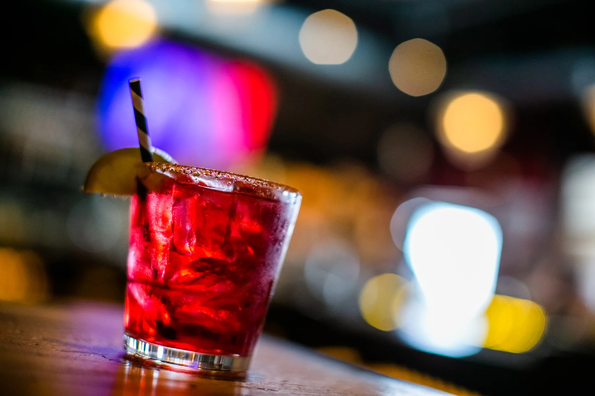

Bay-side acoustic sets, soul revues, sunset jazz quartets and the occasional Americana wildcard. No cover, never a ticket — just a great seat and a great pour.
Calendar updated weekly. Lineup subject to change.
For the latest, follow us on Facebook — we post the week's shows every Monday.
Live music at The Old Causeway is part of what we do — not a feature, not a side show. Most nights of the week you'll hear it from the patio. Most Sundays you'll catch an acoustic act easing brunch along.
We book local: New Jersey artists, LBI regulars, and the occasional sit-in from a touring act who heard the food was worth the drive. No tickets. No cover. Just pull up a chair.
Are you a musician? We're always listening.
Submit a Booking InquiryReserve a table near the patio or pull up to the bar. Walk-ins always welcome — but on weekends, your seat is best on the books.